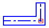

Symmetric Offset Options dialog box
- Width
-
Specifies the width of the slot.
- Radius
-
Specifies the radius applied to concave sharp corners on the slot.
- Cap Type
-
Displays the available cap type options.
- Line
-
Specifies that the cap type be a line.
- Cap Fillet Radius
-
Specifies the radius applied to flat cap corners. This option is available only when the Cap Type is set to Line.
- Arc
-
Specifies that the cap type be an arc.
- Offset Arc
-
Specifies that the cap type be an offset arc.
- Apply Radii if Fillet Radius = 0
-
Allows you to turn off the radii if the fillet radius is set to zero, which will result in sharp convex corners.

- Show This Dialog When The Command Begins
-
Displays the dialog box every time you select the command. If you do not want to display the dialog box when you select the command, clear this option.